<!doctype html public "-//w3c//dtd html 4.0 transitional//en">
<html>
<head><meta name="viewport" content="height=device-height,width=device-width">
   <meta http-equiv="Content-Type" content="text/html; charset=iso-8859-1">
   <meta name="Author" content="Jeffrey Mishlove">
   <meta name="GENERATOR" content="Mozilla/4.73 [en] (WinNT; I) [Netscape]">
   <title>The Roots of Consciousness: Folklore, Psionics -- Practical Applications of Psychic Awareness</title>

<!-- google-analytics.com  START  (aync)-->
<script type="text/javascript">

  var _gaq = _gaq || [];
  _gaq.push(['_setAccount', 'UA-15825841-1']);
  _gaq.push(['_trackPageview']);

  (function() {
    var ga = document.createElement('script'); ga.type = 'text/javascript'; ga.async = true;
    ga.src = ('https:' == document.location.protocol ? 'https://ssl' : 'http://www') + '.google-analytics.com/ga.js';
    var s = document.getElementsByTagName('script')[0]; s.parentNode.insertBefore(ga, s);
  })();

</script>
<!-- google-analytics.com  END  -->

<!-- Histats.com  START  (aync)-->
<script type="text/javascript">var _Hasync= _Hasync|| [];
_Hasync.push(['Histats.start', '1,1087503,4,0,150,30,00000000']);
_Hasync.push(['Histats.fasi', '1']);
_Hasync.push(['Histats.track_hits', '']);
(function() {
    var hs = document.createElement('script'); hs.type = 'text/javascript'; hs.async = true;
    hs.src = ('http://s10.histats.com/js15_as.js');
    (document.getElementsByTagName('head')[0] || document.getElementsByTagName('body')[0]).appendChild(hs);
  })();</script>
<noscript><a href="http://www.histats.com" target="_blank"></a></noscript>
<!-- Histats.com  END  -->

</head>
<body>
&nbsp;
<center><table BORDER=0 COLS=1 WIDTH="600" >
<tr>
<td>
<center><font face="Arial,Helvetica"><font size=+2>Psionics -- Practical
Application of Psychic Awareness</font></font></center>

<p><font face="Arial,Helvetica">Can psychic powers be used for detrimental
purposes? What are the limits of psychic ability? Certainly some inferences
can be obtained by drawing upon the history, the literature, and the folk-wisdom
of psi. I sometimes use the term "psionics," taken from the science fiction
literature, to describe the applied branch of psi exploration.</font>
<p><font face="Arial,Helvetica">Psionics is not particularly concerned
with the truth value of scientific, pseudoscientific or religious theories
about the nature of psychic functioning. It is concerned with the practical
utility of such theories for individual practitioners. It is concerned
with reliability, consistency and magnitude of psi effects, not in the
laboratory, but in the world of business and professional affairs.</font>
<br>&nbsp;
<p><b><font face="Arial,Helvetica">Harmful Purposes</font></b>
<p><font face="Arial,Helvetica">Many traditions teach that psychic abilities
can only be used for good purposes, for instance healing. Other harmful
applications are said either not to work or to rebound back upon the evil-wisher.
Dr. Louisa E. Rhine, who had made a lifelong study of spontaneous psychic
experiences, took such a stance in responding to the question of a seventh-grade
inquirer:</font>
<blockquote><font face="Arial,Helvetica">No Nancy, ESP could not possibly
be used to hurt anyone physically or mentally. It is true that sometimes
people get the false idea that someone is influencing them by ESP. They
think it is by telepathy, but this is very unlikely. Telepathy seldom,
if ever, works that way, for no one can send his thought to another and
make him take it...</font>
<p><font face="Arial,Helvetica">The only way a person could be hurt would
be by his belief that he could be so affected. It is possible sometimes
for a person to "think himself sick" for other reasons and in the same
way he could think himself sick by believing that someone was affecting
him by telepathy. But, if so, his sickness would be caused by mistaken
suggestion, not by telepathy.</font></blockquote>
<font face="Arial,Helvetica">Mrs. Rhine's answer is reassuring and also
reflects an understanding of the psychological mechanisms involved in mediating
psi. It seems quite reasonable to think individuals can reject telepathic
suggestions as easily as you, the reader, might reject any statement you
read in this book. For an aware and enlightened individual this would certainly
be the case. It is also the case that much of what we think of as psychic
phenomena is merely due to suggestion.</font>
<p><font face="Arial,Helvetica">The anthropological literature regarding
tribal cultures indicates that the violation of a taboo and the placement
of a hex can result in death within a few days. This has be attributed
to an extreme operation of the stress-response syndrome by modern researchers.
We might consider the reported instances of deaths, illness, and accidents
from hexes, voodoo, spells, and curses to be the result of suggestion.
Although, we might just as easily ask ourselves whether, if psi could heal
people independently of suggestion, it could not also be used to harm them.
Perhaps psi -- like electricity -- is a neutral force from a moral perspective?
A number of apparent hexes seem to have occurred without even the knowledge
of the victim.&nbsp;</font>
<p><font face="Arial,Helvetica">The research of the Soviet physiologist
Leonid Vasiliev suggests that telepathic hypnotic induction may be occasionally
instrumental in effective behavior manipulation over distances. Similar
telepathic experiments have been used to awaken sleeping subjects, with
slightly less success. However, few subjects are so susceptible and we
have yet to understand the mechanisms that differentiate good and poor
subjects.&nbsp;</font>
<br>&nbsp;
<p><b><font face="Arial,Helvetica">National Security Applications</font></b>
<center>
<p><font face="Arial,Helvetica">Ancient History and Folklore</font></center>

<p><font face="Arial,Helvetica"><i>The Bible</i>. In the Bible as related
in Kings II, vi, the prophet Elisha used clairvoyant abilities to inform
the King of Israel about the battle plans which the king of Syria had formed
against him. Informed of Elisha's abilities, the Syrian king sent a host
of chariots and horsemen to capture the prophet. However, according to
the biblical account, Elisha used his abilities to blind and confuse the
Syrians so that they would be captured by the Israelites.</font>
<p><font face="Arial,Helvetica">Similar and even more dramatic tales are
told of the exodus of the Jewish nation from Egypt; of the original Hebrew
conquest of Canaan; and of the subsequent military conquests of Saul, David
and Solomon.</font>
<p><font face="Arial,Helvetica"><i>Asian Martial Arts</i>. The earliest
treatise on warfare, <i>The Art of War</i>, written in 500 b.c. by the
Chinese general Sun Tzu, details the intimate link between success in battle
and the skilled management of a "force" which was called ch'i. The basic
principles are elucidated in this amazing document.</font>
<p><font face="Arial,Helvetica">Sun Tzu argues that wars are won through
a combination of conventional military tactics and a variety of extraordinary
methods which involve the knowledge and control of ch'i, which flows through
the body of the warrior and can be used to influence the mind of the enemy
to produce illusions, deception and weakness.</font>
<p><font face="Arial,Helvetica">The warrior cultivated ch'i through self-knowledge
gained by following the mystical Taoist traditions. Mental stillness and
other psi-conducive stated enabled the warrior to obtain a poise and concentration
so intense that it was effortless in its deadly spontaniety. Such training
emphasized the ability to maintain the meditative state in the midst of
intense physical activity. The martial arts trained the warrior to take
advantage of the slightest break in the enemy's concentration.</font>
<p><font face="Arial,Helvetica"><i>Joan of Arc</i>. A peasant girl with
no military training, followed her visions and voices to lead the bedraggled
armies of France to victory against the English. Many ostensibly miraculous
events -- the subject of continuing historical debate -- led to the French
Dauphin's appointment of Joan as the titular head of his army. Joan was
burned at the stake in 1431 as a witch. In 1456, an ecclesiastical court
proclaimed the iniquity of her first trial and annulled its judgment. In
1920, she was cannonized as a saint by the Roman Catholic Church.</font>
<br>&nbsp;
<br>&nbsp;
<br>
<br>
<center>
<p><font face="Arial,Helvetica">The World Wars</font></center>

<p><font face="Arial,Helvetica">In June 1919, in an action against the
Hungarian Republic, Czech soldiers were put into a hypnotic state and asked
to clairvoyantly scan the landscape to determine the enemy's strength and
position. A pamphlet titled <i>Clairvoyance, Hypnosis and Magnetic Healing
at the Service of the Military</i>, written in 1925 by karl Hejbalik, reports
that the information obtained through these non-normal means always proved
correct when later checked through normal means. The contemporary Czech
psychotronic researcher Zdenek Rejdak interviewed the individuals involved
in the Czech psi maneuvers. According to Rejdak, they confirmed Hejbalik's
account "in all details."</font>
<p><font face="Arial,Helvetica">The Nazis are said to have assembled many
powerful occult adepts from Tibet and Japan to train and advise them. One
of the most important and powerful groups in Germany was the Nazi Occult
Bureau, which attempted to use occult forces for espionage and the magical
control of events including a conscious, pseudo-Nietzschean attempt to
replace Christianity with the ancient Teutonic myth of the war god, Wotan.
Coincidentally, in the early 1930s, the great Swiss psychiatrist Carl Jung
noticed a marked pattern of imagery of the war god Wotan in the dreams
of his German patients. The situation was so dramatic that it prompted
him to write, in an essay in 1933, that the German people were subconsciously
preparing themselves for war.</font>
<p><font face="Arial,Helvetica">Hitler obtained extensive occult training
from the German nationalistic Vril Society and the adept circle known as
the Thule Group. Teachings of these groups account for many aspects of
Nazi culture which are inexplicable in terms of ordinary historical scholarship.&nbsp;</font>
<p><font face="Arial,Helvetica">Hitler's personal psychic abilities, especially
clairvoyant and precognitive visions, were by some accounts instrumental
in many of the dramatic tactical victories during the early period of the
war. Eventually, his intoxication with power and the use of drugs so poisoned
his mind that he compulsively followed instructions received through visions,
and these led to disastrous strategic errors.</font>
<p><font face="Arial,Helvetica">British and American intelligence employed
astrologers and clairvoyants to anticipate the occult advice being given
to Hitler and his forces. According to The Psychic Spy by Linedecker, the
Allies resorted to using a group of out-of-body practitioners to scout
key locations inside enemy territory from an island in the Atlantic.</font>
<p><font face="Arial,Helvetica">Lord Hugh Dowding, head of the Royal Air
Force during World War II, and often called "the man who won the Battle
of Britain," had experiences during the war which led him later to become
a major figure in the spiritualist movement. Released secret documents
of the British Army reveal that Dowding's wife was a sensitive. Using methods
now known among psi researchers as "remote viewing," she was able to detect
enemy air bases that the army had not discovered through conventional surveillance.
These abilities were coupled with a spiritualistic belief which so impressed
Lord Dowding that he believed himself to be in contact with spirits of
the British airmen who had been downed in battle.</font>
<p><font face="Arial,Helvetica">Another of the great Allied commanders
during World War II, U.S. Army General George S. Patton, reputedly possessed
rare psi abilities. Patton believed himself to be the reincarnation of
an ancient Roman general. General Omar N. Bradley, Patton's commanding
officer during the war, has confirmed Patton's clairvoyant and precognitive
abilities, referring to them as his "sixth sense." Bradley details a wartime
example: after crossing the Moselle River near Coblenz with some three
divisions moving south, Patton suddenly stopped his advance and collected
his forces for no known reason. Questioned by subordinates about this strange
behavior, Bradley expressed confidence that Patton had "felt" something
that "was not apparent from the information we had at the time," which
justified his action. The following day, Patton's forces were hit by a
strong and otherwise unexpected counterattack which the general was able
to repel only because he had earlier stopped to regroup.</font>
<p><font face="Arial,Helvetica">Soviet interest in psi was kindled during
World War II by a series of unusual events which transpired between Joseph
Stalin and the well-known Polish psychic, Wolf Messing. By using telepathic
hypnosis to suggest to Stalin's guards and servents that he was Lavantri
Beria, the head of Soviet secret police, Messing was reputedly able to
walk past them unchecked into Stalin's personal dacha and into the very
room where Stalin was working. Stalin's subsequent tests of Messing's abilities
were published in the Soviet Journal, <i>Science and Religion</i>.</font>
<br>&nbsp;
<br>&nbsp;
<br>
<br>
<center>
<p><font face="Arial,Helvetica">Eastern Europe&nbsp;</font></center>

<p><font face="Arial,Helvetica">In the 1920s, Professor Lionid Vasiliev,
Director of Leningrad University's Department of Physiology, initiated
a series of experiments into the effects of mental suggestion at a distance.
Vasiliev was motivated in part by reports of the French physiologist Pierre
Janet, and perhaps also by the extraordinary power which the monk Rasputin
once held over the entire Russian ruling family. Vasiliev began by attempting
to influence a hypnotized subject to move his arm, leg, or even a specified
muscle on cue without verbal instructions. Eventually, the hypnotist achieved
success in the experiments with subjects separated by distances as great
as 1700 kilometers (i.e., from Leningrad to Sebastopol).</font>
<p><font face="Arial,Helvetica">Contemporary Soviet interest in remote
hypnotic manipulation has advanced considerably since this early research.
Research and development now continues at the Institute of Cybernetics
of the Ukrainian Academy of Science and the Institute of Psychology of
the Moscow Institute of Control Problems. Experiments are no longer limited
to influencing only trained subjects, but now also focus on hypnotic influence
over untrained and unsuspecting persons, and occasionally even large groups.</font>
<p><font face="Arial,Helvetica">In one Soviet study, reportedly conducted
at Kharkov University, a telepathist is claimed to have been able to stimulate
the brain of a rat for three minutes after clinical death. In another Soviet
study, the psychokineticist Nina Kulagina is reported to have influenced
a frog's heart to stop beating. In another Soviet experiment conducgted
by Professor Veniamin Pushkin, at the Research Institute of General and
Pedagogical Psychology, the same psi practitioner was reportedly able to
influence the blood volume in the brain of other individuals. The subjects
became so dizzy that they could no longer stand and had to sit or lie down.</font>
<p><font face="Arial,Helvetica">The Soviets have also practiced the strategic
application of telepathic manipulation. Engineer Larissa Vilenskaya, a
Soviet emigre engaged in various forms of psi practice and investigation,
reported on an NBC <i>Brinkley Magazine</i> television special that researchers
recruited gifted subjects for the purpose of negatively influencing foreign
political leaders while watching them on television.</font>
<p><font face="Arial,Helvetica">The Czechoslovakian who pioneered the hypnotic
method of training ESP, Dr. Milan Ryzl, defected to the United States in
1967 when he was made to understand that the Czech government wished to
support his research for military and espionage purposes. Ryzl has written
that secret psi research associated with state security and defense is
going on in the USSR. One such project was for the purpose of using telepathic
hypnosis to indoctrinate and "reeducate" antisocial elements.</font>
<br>&nbsp;
<br>&nbsp;
<br>
<br>
<center>
<p><font face="Arial,Helvetica">United States&nbsp;</font></center>

<p><font face="Arial,Helvetica">As early as 1952, the U.S. Department of
State used visualization exercises to train its operatives in the use of
intuitive psi faculties. A number of CIA-funded secret reports are not
available through the Freedom of Information Act on projects incorporating
psi research, including Projects Bldbird, Artichoke and MK-ULTRA. One
of the goals of each of these operations was to achieve reliable psi capability
in laboratory subjects.</font>
<p><font face="Arial,Helvetica">It was during the Eisenhower administration,
according to knowledgable sources, that the CIA set up an interagency committee
to follow psi research. This committee has been active for three decades,
and has sponsored a number of international scientific conferences to which
Soviet neurophysiologists and cyberneticists were invited. Counter-intelligence
cases during this period led the CIA to infer that the Chinese military
had achieved significantly superior mind control abilities -- presumably
thanks to training by the Soviet Union.</font>
<p><font face="Arial,Helvetica">There were some attempted applications
of psi in the U.S. military during the Vietnam war. U.S. marines were trained
to use dowsing rods to locate land mines during the war. The first report
of such was was by the weekly, The Observer, published for the U.S. forces
in Vietnam in 1967. The report summarized the situation:&nbsp;</font>
<blockquote><font face="Arial,Helvetica">Introduced to the Marines of the
2nd Batalion, 5th Marine Regiment, the divining rods were greeted with
skepticism, but did locate a few Viet Cong tunnels.&nbsp;</font></blockquote>
<font face="Arial,Helvetica">Many reports have emerged from Vietnam of
spontaneous ESP experiences -- often saving the lives of American troops
under jungle guerilla war conditions. One marine sergeant has reported
that entire platoons learned how to sensitize themselves to such intuitive
signals, as a basic survival mechanism.</font>
<p><font face="Arial,Helvetica">A significant acceleration of government-sponsored
research in psychic research and related areas occurred during the Nixon
administration. During this period, physicists at Stanford Research Institute,
now SRI International, received increased funcing from a number of government
sources, including NASA for psychic studies. They made the claim that select
psychics, including scientologist "clear" Ingo Swann, Israeli psychic Uri
Geller, and ex-police chief Pat Price (now deceased) produced clairvoyantly
obtained evidence of remote physical sites (they called it "remote viewing")
with such accuracy that the most secret reaches of any military installation
of the surface of the earth -- or Mars for that matter -- were no longer
safe from view.</font>
<p><font face="Arial,Helvetica">These experiments persuaded the Office
of Naval Research and the intelligence community to continue supporting
the effort. In 1973, according to knowledgable sources, the CIA and the
National Security Agency -- responsible for the codebreaking and the codemaking
efforts of this country arranged a top secret demonstration of clairvoyance,
or "remote viewing," at SRI. Swann and Price, given only geographic coordinates,
sketched the target site accurately -- an island in the Indian Ocean. The
SRI research apparently demonstrated that secret military targets, in the
U.S. and overseas, can be described in great detail. Objects as small as
the head of a pin have been described by remote-viewers over distances
of many kilometers. Other experiments have successfully described military
targets, such as airports, from distances of several thousand kilometers.</font>
<p><font face="Arial,Helvetica">From the military's point of view, such
capabilities have clear application for obtaining otherwise unavailable
information about enemy locations and operations. From the point of view
of the intelligence community, a trained, accurate psi practitioner would
be an ideal agent. He or she could use psi skill to break secret codes,
penetrate guarded military installations and reveal strategic plans. Another
important use of remote viewing could be for safety inspection of military
equiupment.</font>
<p><font face="Arial,Helvetica">In 1972, according to John Wilhelm writing
for the <i>New York Times</i> (1977), it sent a team of scientists, under
the auspices of DARPA (Defense Advanced Projects Research Agency) to SRI
to "objectively evaluate" the claims of researchers Russell Targ and Harold
Puthoff. DARPA was particularly concerned over the interesting coincidence,
if that is what it was, that its multi-million-dollar computer at SRI went
inexplicably haywire while Uri Geller was attempting psychokinesis in a
nearby lab. DARPA sent Ray Hyman, a noted psychologist, magician and skeptic;
Robert Van de Castle, a psychologist and expert in sleep and dream research
from the University of Virginia and also past-President of the Parapsychological
Association; and George Lawrence, a second psychologist/skeptic. The report
of the investigation was negative. Nevertheless, reports that "remote viewing"
replication was underway at Fort Mead, an important center of the National
Security Agency, suggest that the military and intelligence communities
do not take the certainties of either proponents or skeptics at face value.</font>
<p><font face="Arial,Helvetica">Before becoming President, Jimmy Carter
reported sighting an Unidentified Flying Object near his home in Georgia,
and, as is well known, requested a full report of the phenomena upon taking
office.</font>
<p><font face="Arial,Helvetica">According to Uri Geller's report, while
living in Mexico he developed a relationship with the wife of the President
of Mexico, Mrs. Lopez-Portillo, who had a fascination with psychic phenomena.
Researchers at an institute under the direction of the Mexican President's
sister, Margarita Lopez Portillo, conducted some investigations of Geller
1977. President Carter, during a visit to Mexico, heard of the Mexican
interest in psychokinesis and immediately ordered an extensive Defense
Intelligence Agency investigation. A report resulted, titled <i>Parapsysics
Research and Development -- Warsaw Pact</i> which was the third major report
on psi research released by the Defense Intelligence Agency.</font>
<p><font face="Arial,Helvetica">In 1978, a survey of 14 active psi research
laboragtories by Dr. Charles Tart revealed that five of those laboratories
had been officially approached by officials or agents of the U.S. government
who were gathering information on psi. The total known figure, at the time,
for funding to mainstream psi researchers amounted to several hundred thousand
dollars a year. Almost all the researchers surveyed maintained that using
psi for espionage or military purposes was a very real possibility, and
several were certain it was being done.</font>
<p><font face="Arial,Helvetica">Probably more than in other areas of scientific
investigation, it is information about who funds psi research research
that is classified, not only what is being done. Former White House staffer,
Barbara Honegger reported, for instance, that the very word "parapsychology"
was classified at the CIA -- that is, a directive existed that it is not
to be used in telephone conversations except over secure lines; and that
any report with the word in it is automatically classified.</font>
<p><font face="Arial,Helvetica">Of all the services, the Navy has historically
been the most open-minded about taking psi research seriously and funding
it. In 1975, the Navy reportedly funded SRI to see if psychics could detect
sources of electromagntic radiation at a distance; and, in 1976, to see
whether they could influence a magnetometer at Stanford University. The
SRI scientists reported that they could. Critics of this set of results,
however, argue that the project was guilty of "optional stopping" to achieve
its results. The Navy was interested because magnetometers, which measure
magnetic fields, are important in detecting submarines.</font>
<p><font face="Arial,Helvetica">The Navy, according to knowledgable sources,
also tested self-professed psychics to see whether they could accurately
describe maneuvers of a foreign Navy. A New York self-professed psychic,
Shawn Robbins, has reported working with the intelligence community to
track the movements of foreign nuclear submarines. Robbins was originally
tested at the Maimonides Hospital Psychophysics Laboratory in Brooklyn,
New York. (However, her psi abilities were not determined to be significant
at that time.)</font>
<p><font face="Arial,Helvetica">Columnist Jack Anderson claims the navy
also funded the controversial research by polygraph expert, Cleve Backster,
on the alleged ability of plants to detect and respond to unspoken thoughts
and feelings of living organisms, ranging from humans to brine shrimp.
However, according to other sources, it was the army that funded Backster's
research, in the hopes of "training" plants to cost-effectively detect
intruders in dangerous, security-sensitive areas.</font>
<p><font face="Arial,Helvetica">According to information revealed to Barbara
Honegger, during the Reagan administration for the first time the CIA officer
in charge of keeping abreast of psi research noted in his periodic report
to the National Security Council that there is growing reason to take the
field more seriously.</font>
<p><font face="Arial,Helvetica">The fundamental reason for this increased
interest is initial results coming out of laboratories in the United States
and Canada that certain amplitude and frequency combinations of external
electromagnetic radiation in the brainwave frequency range are capable
of bypassing the external sensory mechanisms of organisms, including humans,
and directly stimulating higher level neuronal structures in the brain.
This electronic stimulation is known to produce mental changes at a distance,
including hallucinations in various sensory modalities, particularly auditory.
The analogy of these results to some spontaneous case reports in the psychical
research literature has not escaped notice by the CIA, which is following
the research.</font>
<p><font face="Arial,Helvetica">A development during the first months of
the Reagan administration was the release by the House Science and Technology
Subcommittee, chaired by Representative Donald Fuqua, containing a chapter
and supporting appendix on the "Physics of Consciousness" (mispelled "conscience"
in the table of contents). The report recommends that psi research deserves
serious attention by Congress for potential future funding. It states that
"general recognition of the degree of interconnectedness of minds could
have far-reaching social and political implications for this nation and
the world."</font>
<p><font face="Arial,Helvetica">The primary sources cited in the report
are the research studies of Harold Puthoff and Russell Targ at SRI International,
and a report prepared by William Gough, Technical Director of the office
of Program Assessment and Integration of the U.S. Department of Energy.
Gough published the cited report under the auspices of the Foundation for
Mind-Being Research.</font>
<p><font face="Arial,Helvetica">A statement of U.S. government interest
in psi-war scenarios appeared in the private publicjation, Military Review,
by Lieutenant Colonel John B. Alexander. Alexander asserted that psychotronic
weapons already exist and that their lethal capacity has been demonstrated.
He was referring here predominantly to the claims of Lt. Colonel Thomas
E. Beardon that third-generation psychotronic weapons, including what he
called a "photonic barrier modulator: which induces physiological changes
at distances, near or far; the 'hyperspatial howitzer," which allegedly
can transmit nuclear explosions to distant locations; and a radionics-type
device which, Bearden contended, sank the U.S. nuclear submarine Thresher
in 1963.,</font>
<p><font face="Arial,Helvetica">Alexander's claims were unnecessarily alarmist
in nature and a number of them are known to be either exaggerated or erroneous.
He stated, for instance, that research in the Transcendental Meditation
Sidhis Program has produced evidence that individuals are taught in the
program to levitate. Investigations into this claim have found it unsupported
by any valid observations or measurements.</font>
<p><font face="Arial,Helvetica">In 1988, the U.S. Army commissioned a study
on a variety of techniques purporting to enhance human performance.</font>
<br>&nbsp;
<p><b><font face="Arial,Helvetica">Accident prevention</font></b>
<center>
<p>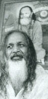
<br><b><font face="Arial,Helvetica"><font size=-1>Maharishi Mahesh Yogi</font></font></b></center>

<p><font face="Arial,Helvetica">The claim is made with the Transcendental
Meditation (TM) program that the practice of TM by many individuals creates
an unexplained effect on the "social field" which results in reduced accidents,
foul weather, sickness and crime -- as measured by statistical social indicators.&nbsp;
Although these claims are presented in a quasi-empirical fashion -- with
statistics and control groups -- they have yet to be seriously presented
or evaluated in the academic literature of either sociology or psi research.
The methodological problems inherent in any study conducted by an organization
for the purpose of promoting training offered by that organization are
sufficient to merit skepticism in the absence of independent replication.</font>
<br>&nbsp;
<p><b><font face="Arial,Helvetica">Dowsing</font></b>
<center>
<p>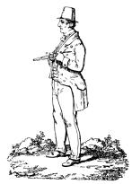</center>

<p><font face="Arial,Helvetica">Dowsing, a poorly understood technique
for finding underground water and minerals, seems to be gaining popularity
as a result of increasing need for efficient development of resources.
Some researchers maintain that dowsing involves an extraordinary sensitivity
to anomalies in weak magnetic fields. This is probably true, but still
does not represent the entire picture.</font>
<p><font face="Arial,Helvetica">Henry Gross, perhaps America's best known
dowser, has in many instances been able to locate oil, water, minerals
and even lost people by using only a map. Gross's abilities were confirmed
somewhat in tests conducted by J. B. Rhine and published in 1950 -- however
these laboratory studies were admittedly not related to dowsing as practiced
by Gross in his everyday life. Journalistic documentation of Gross's actual
work including the prevailing conditions, the people and areas involved
have been published in a series of books by Kenneth Roberts.</font>
<p><font face="Arial,Helvetica">In many instances Gross was apparently
successful in pinpointing wells when conventional geological techniques
had failed or had indicated there was no water. He dowsed water for many
industrial concerns including RCA Victor and Bristol-Myers pharmaceutical
company. He reportedly map-dowsed from Maine fresh water in Bermuda where
none had been found in 300 years. In Kansas he dowsed thirty-six wildcat
oil wells and of the seventeen that were drilled, it is claimed he was
correct in fifteen instances. Seismic predictions were wrong in nine out
of seventeen cases. Although a strong advocate of Gross's abilities, Roberts
also discusses a number of his failures.</font>
<p><font face="Arial,Helvetica">Henry Gross's talents were investigated
by the New Jersey psychiatrist and psychical researcher, Dr. Berthold E.
Schwarz. His investigations included psychiatric interviews, physiological
studies and field trips. Schwarz found Gross -- a modest, friendly game
warden -- to be a man of complete honesty. The physiological data, as well
as direct observation, indicated that Gross expended a great deal of energy
in the dowsing process. In the field studies, Schwarz claims he observed
Gross successfully dowse seven oil wells in an area where oil was not geologically
expected. Gross also apparently ascertained depth, flow and other quantitative
measures that were presumably beyond the ability of normal sense perception.</font>
<p><font face="Arial,Helvetica">At the Laboratory of Physiological Cybernetics
at the University of Leningrad under the directorship of Professor P. I.
Gulyaev, research has been focused on the human ability to perceive faint
electrostatic fields. This research has led to renewed Soviet interest
in a phenomenon known in this country as dowsing, which the Soviets call
the "bio-physical effect." Studies in this area were initiated by the Soviet
geologist N. N. Sochevanov, who has reportedly documented several dozen
cases in which dowsing has been successfully employed in mining and drilling
projects. Dowsing is also currently taught to professional minerologists
and geologists in the Soviet Union.</font>
<p><font face="Arial,Helvetica">Dowsing has reportedly been successful
in locating commercial grade gold ore near Krasnoyarsk, tin deposits in
Kirghizia and Tadzhikstan, iron in the southern Urals, copper-nickel ores
near Krasnoyarsk, lead and zinc ores in the Tadzhik SSR, and gypsum in
the Ukrainian SSR. Other reports describe finds in unspecified locations
of molybdenum, bismuth, tungsten, bauxite and other economically and militarily
valuable metals.</font>
<p><font face="Arial,Helvetica">These findings may, if valid, be strategic
importance, given that the future security of a nation depends on continued
access to mineral resources. Because of this importance, it would be reckless
to overvalue the anecdotal evidence suggestive of dowsing or other psionic
claims. Section III summarizes a body of psychological research demonstrating
many types of cognitive errors to which all humans -- skeptics and proponents
alike -- are susceptible. A clear perspective on dowsing (or any other
folklore claims) can only be attained when skeptical arguments are carefully
weighed against claims of proponents.&nbsp;</font>
<br>&nbsp;
<p><b><font face="Arial,Helvetica">Treasure Hunting</font></b>
<p><font face="Arial,Helvetica">One of the most dramatic uses of psychic
talent to recover treasure reportedly occurred here in the United States.
<i>The
National Inquirer</i> commissioned the Chicago psychic Olaf Jonsson to
assist treasure hunters in the search for the sunken ruins of Spanish galleons
loaded with gold and silver bullion. Jonsson seemed to sense the spot as
the search vessel approached it and he asked the crew members to form a
circle and concentrate with him. Going into trance, he actually relived
the sinking of the ships. Under his directions the divers reportedly recovered
part of the fortune, valued at $300,000.&nbsp;</font>
<p><font face="Arial,Helvetica">Some psychics have a difficult time, probably
for psychological reasons, using their abilities for their own direct financial
gain-although they perform satisfactorily when they charge others for "life
readings," etc. Even Uri Geller fared very poorly in Las Vegas. (Although
it would be interesting to test habitually successful gamblers for ESP.)
The inabilities seem to be more a reflection of a person's personality,
rather than a limitation upon psi itself.</font>
<br>&nbsp;
<p><b><font face="Arial,Helvetica">Accuracy of Information Transmission</font></b>
<p><font face="Arial,Helvetica">A number of case histories also testify
to this possibility. For example, Dr. Georgi Lozanov, director of the Institute
of Suggestology and Parapsychology in Sophia, Bulgaria, is said to have
demonstrated a very impressive communications technique using the majority-vote
technique.</font>
<center>
<p>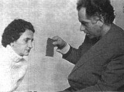
<br><b><font face="Arial,Helvetica"><font size=-1>Dr. Georgi Lozanov with
a subject (courtesy Milan Ryzl)</font></font></b></center>

<p><font face="Arial,Helvetica">The telepathic receiver sits in front of
two telegraph keys, one for each hand. Some distance away, the sender telepathically
suggests that the receiver press either the right or left key, according
to the beats of a metronome. Each telepathic suggestion is repeated ten
times. The receiver must get six of these correct for the message to be
considered received. Lozanov reported at the 1966 Parapsychology Conference
in Moscow that phrases and entire sentences have been sent this way with
about 70% accuracy. Thousands of such tests are said to have now been demonstrated
before many scientists.</font>
<p><font face="Arial,Helvetica">As the name of his institute implies, Lozanov
is concerned with many of the psychological factors effecting ESP scores.</font>
<p><font face="Arial,Helvetica">Using techniques derived from yoga, Lozanov
combines suggestion and relaxation in a way that is different from hypnosis
in that his subjects remain in the waking state. Used in education, these
techniques show phenomenal promise to increase language learning, memory,
artistic and musical ability. Lozanov also is applying his techniques towards
the development of mental healing and dermal vision.</font>
<p><font face="Arial,Helvetica">One of Lozanov's many research activities
involves the evaluation of the predictions made by the blind, peasant woman,
Vanga Dimitrova, who may be the modern world's first Government supported
prophetess. (In fact, the Institute of Suggestology and Parapsychology,
with over thirty staff members, is supported by the Bulgarian government.)
Studies are reported to have shown that Dimitrova's predictive abilities
-- particularly strong in terms of finding lost relatives and friends--are
about eighty percent accurate.56</font>
<p><font face="Arial,Helvetica">In Prague, Czechoslovakia, things were
somewhat different. Dr. Milan Ryzl, a biochemist at the Czech Institute
of Biology, had spent years trying to interest the government in supporting
psychic research -- all with very little success. Undaunted, Ryzl continued
his own studies which involved hypnotic techniques for developing ESP subjects.
After practicing on some 500 individuals, Ryzl claimed to have found fifty
with very strong, testable psi abilities.</font>
<center>
<p>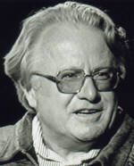
<br><b><font face="Arial,Helvetica"><font size=-1>Milan Ryzl</font></font></b></center>

<p><font face="Arial,Helvetica">Ryzl used his psychic subjects to predict
the winning numbers in the Czech public lottery. He was successful for
weeks in a row winning the equivalent of several thousand dollars. However,
Ryzl's psychical research successes also proved to be detrimental to his
safety. The Czechoslovakian regime became very interested in his work.
He found himself constantly followed by secret agents. His manuscripts
were stolen. Eventually he was asked, in rather forceful terms, to spy
on his scientific colleagues in other countries. The authorities made it
very clear they were interested in the development of psi techniques for
espionage purposes. The government exercised such control over his life
that Ryzl had no choice but to comply or defect. His escape from Czechoslovakia
was a masterpiece in precise timing. He actually contrived to leave the
country with his entire family in three automobiles and many valuable possessions
including his prized library. Ironically, Ryzl recalls that the details
of his defection had been predicted for him fifteen years earlier by a
psychic who had been a friend of the family.</font>
<p><font face="Arial,Helvetica">Researchers in socialist countries have
continued the emphasis on the practical applications of ESP initiated by
scientists such as Ryzl. Actually, since Ryzl's defection, western psychical
research has become somewhat more oriented toward practical uses.</font>
<br>&nbsp;
<p><b><font face="Arial,Helvetica">Psychic Archeology</font></b>
<p><font face="Arial,Helvetica">The use of psychics for archeological exploration
has probably been the most extensively explored area of potential psi application.
Its beginnings include the investigation of Glastonbury Abbey, perhaps
England's old Christian ruin, by Frederick Bligh Bond.&nbsp;</font>
<p><font face="Arial,Helvetica">At the University of Toronto, Professor
J. N. Emerson of the department of anthropology has reported on his use
of psychic assistance in doing archeological field work. His friend, a
psychic, George McMullen, has shown extraordinary ability to psychometrize
artifacts and relate accurate details about the history and circumstances
surrounding the object. George has also proven his usefulness in examining
archeological sites before the digging begins. Just by walking over a site,
he has been able to describe its age, the people who lived there, their
dress, dwellings, economy and general behavior. He has also provided specific
excavation guidance. Emerson estimated that George's clairvoyance is 80%
accurate. Furthermore. Emerson has been able to achieve even greater degrees
of accuracy by using teams of several psychics and evaluating their reports
using a majority-vote technique.</font>
<p><font face="Arial,Helvetica">In the Soviet Union, techniques of dowsing
are applied to archeology. Chris Bird reports that the Russian anthropologist
Pushnikov has successfully used psychic dowsers to probe the remains of
the Borodino battlefield, seventy miles from Moscow, where the Russians
battled Napoleon in 1812. Other Russian excavations utilized the talents
of dowsers in probing the estate of the legendary Czar, Boris Gudenov.</font>
<p><font face="Arial,Helvetica">The work of the Mobius Society is well
known to the general public and the psychical research community. Stephan
Schwartz began by looking at the role of psi in archeology. In his first
book, <i>The Secret Vaults of Time</i>, he described a dozen cases in which
archeologists have been successful in uncovering difficult to find locations
and artifacts using psi methods. He then synthesized for himself a methodology,
similar to the intuitive consensus method of Kautz, which relied on the
overlapping judgments of a number of independent practitioners. He has
successfully used this method in a number of explorations. One of these,
off the California coast on Santa Catalina Island, was broadcast on television.
His explorations in Egypt have been the subject of several publications
and scientific presentations.</font>
<p><font face="Arial,Helvetica">Following guidance obtained from interviews
with psychic respondents, researchers from the Mobius Group; in Los Angeles
initiated an underwater archeological project in the Carribean Sea. In
September 1987, two respondents, Hella Hammid and Alan Vaughan were taken
out in a small boat and within an hour had agreed on a site and dropped
a buoy. The next morning divers noticed that a sequence of fire coral when
viewed from one angle seemed unnaturally symmetrical. When one of the fire
corals was chipped, it revealed what was later determined to be a bronze
keel bolt. The buoy dropped by Vaughan and Hammid was approximately 10
feet from the site. Four weeks of excavation revealed an unusually intact
wreck buried 3 to 5 feet beneath the eel grass and sand. Nothing was visible
except the fire coral covered keel bolts and some ballast mixed with natural
rock. It required substantial excavation to uncover the remains of a collapsed
American armed merchant brig that sank in the early decades of the nineteenth
century.</font>
<p><font face="Arial,Helvetica">What are the odds of finding the wreck
described by luck? There is no completely satisfactory statistical answer
to this question. The Mobius researchers justify their approach:</font>
<blockquote><font face="Arial,Helvetica">Unlike a laboratory experiment
with a known baseline, no absolute probability can be given in an archeological
experiment; fieldwork applications of psi are inherently different from
in-lab experiments. However, vigorous concurrent utilization of non-psi
electronic location technologies can serve as field controls in a double
or triple blind setting, producing results as significant, in the author's
view, as low p values. For example, 85,000 shipwrecks identical to the
one reported here could be fitted into just the Northern Consensus Zone,
and under optimal conditions, it could take several months of magnetometer
survey work to locate one such wreck. This wreck was psychically located,
and the location verified, in less than five hours.</font></blockquote>
<font face="Arial,Helvetica">Critics respond that the Mobius reports do
not account for buoys dropped at other sites where shipwrecks were not
located.</font>
<br>&nbsp;
<p><b><font face="Arial,Helvetica">Psychic Police Work</font></b>
<p><font face="Arial,Helvetica">The use of psychics by police for solving
crimes goes back many decades. As early as 1914, the Frenchman W. de Kerler,
calling himself a psycho-criminologist, demonstrated on many occasions,
without any reward or publicity, his ability to solve crimes that baffled
police. Some of his many alleged exploits have been recorded. In 1925,
another case of clairvoyant detective work came to the attention of the
German public. In this case, the psychic, August Drost, was on trial for
fraud. The case resulted from an incident in which he had attempted, with
little success, to help officials solve a burglary. During the trial, which
lasted for several weeks, much of the testimony pointed toward Drost's
successful ESP crime solving in other cases. He was acquitted and continued
to practice his unorthodox detective work.</font>
<p><font face="Arial,Helvetica">Another psychic detective, Janos Kele,
worked for years in Hungary and Germany without ever accepting fees or
rewards. His abilities were tested by Professor Hans Dreisch at Leipzig
University who pronounced him a "classic clairvoyant." He was also successfully
tested by Dr. Karlis Osis, then at Duke University. According to Dr. Stephen
Szimon, a deputy police chief in Hungary, Kele averaged 80 per cent accuracy
in the clues he provided for tracing missing persons.</font>
<p><font face="Arial,Helvetica">Today in the United States, a number of
police officials have publicly credited clairvoyants who have helped them
with difficult investigations. One of the most prominent of these seers
is Marinus B. Dykshorn, a Dutchman, whose autobiography is titled, <i>My
Passport Says Clairvoyant</i>. Dykshorn's career spans three decades and
three continents. He currently resides in the U.S. For his psychic detective
work he has twice been made an associate member of the Sheriffs Association
of North Carolina. In May, 1971, he received a commission from Louis B.
Nunn, the governor of Kentucky as a Kentucky colonel, "in consideration
of outstanding achievement." Dykshorn's book contains ten notarized affidavits
from individuals who have received benefit from his clairvoyant abilities.
It is particularly interesting to note in his book the difficulties that
he had getting researchers interested in testing his abilities, well after
his practical successes had been acclaimed.</font>
<p><font face="Arial,Helvetica">A psychic who has established lasting relationships
with police authorities is Irene F. Hughes of Chicago.</font>
<center>
<p>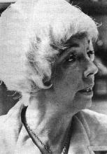
<br><b><font face="Arial,Helvetica"><font size=-1>Irene Hughes</font></font></b></center>

<p><font face="Arial,Helvetica">She is the head of an organization called
the Golden Path where she has taught classes in psychic subjects and tests
students interested in developing their own psychic abilities. On the wall
of her office, a plaque signed by three Chicago policemen expresses appreciation
for the leads she has given in solving a number of cases. In one particular
homicide case, Mrs. Hughes was able to provide police with the name and
address of the murderer -- adding that the case would take a long time
to solve. It was, in fact, almost three years before the fugitive was found.
According to crime reporter Paul Tabori, she is credited by police in Illinois
with having helped to solve no less than fifteen murder cases.</font>
<p><font face="Arial,Helvetica">Other tested psychics who are known to
have worked with police officials include Olaf Jonsson and Alex Tanous.
Undoubtedly there are more who prefer to work quietly and without publicity.
Police departments receive a regular stream of tips that allegedly come
from psychic insights. Most of them simply do not prove useful. Nevertheless,
this area deserves further exploration.</font>
<p><font face="Arial,Helvetica">Paul Tabori writes of the Viennese Criminological
Association meeting he attended in the early 1930s devoted to the question
of "so-called occult phenomena" in police procedure and judicial investigation.
Many learned academics voiced the opinion that clairvoyance, telepathy,
and even hypnosis were too unreliable to be used with any advantage in
police and judicial work. Equally insistent however were lawyers and police
themselves who stated practice had proved the value of psi in certain investigations
and that it was foolish to reject it simply because of experimental and
theoretical difficulties.</font>
<p><font face="Arial,Helvetica">Great caution must be exercised in evaluating
psi claims related to crime investigation. Skeptical Dutch researcher,
Piet Hein Hoebens, for example was able to find major loopholes in claims
regarding the Dutch clairvoyant Gerard Croiset -- "the Mozart of Psychic
Sleuths." Newspapers throughout Europe acclaimed Croiset as a great psychic,
at the time of his death in July 1980. This is particularly disturbing,
since Croiset's abilities were attested to by W. H. C. Tenhaeff, a psi
researcher at the University of Utrecht in the Netherlands, who had studied
Croiset's alleged abilities for several decades.</font>
<center>
<p>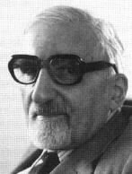
<br><b><font face="Arial,Helvetica"><font size=-1>W. H. C. Tenhaeff</font></font></b></center>

<p><font face="Arial,Helvetica">Hoebens investigation strongly suggests
either incredibly shoddy research or fraud on the part of Tenhaeff.&nbsp;</font>
<p><font face="Arial,Helvetica">With such a history, it is understandably
risky for me to report psi crime investigations with which I am personally
acquainted. Yet, for some years I have been monitoring Kathlyn Rhea, a
psi practitioner now living in Novato, California.</font>
<center>
<p>
<br><b><font face="Arial,Helvetica"><font size=-1>Kathlyn Rhea</font></font></b></center>

<p><font face="Arial,Helvetica">Author of <i>Mind Sense</i> and <i>The
Psychic is You</i>, she is well-known for her work with police departments.,
She has been active on well over 100 cases.&nbsp;</font>
<p><font face="Arial,Helvetica">One case in particular provides evidence
that Kathlyn Rhea was directly instrumental in locating a missing body.
I personally obtained complete corroboration from the law enforcement officials
involved. The case occurred several years ago in Calavaras County, California,
in the foothills of the Sierra Nevada gold country. An elderly man, Mr.
Russell Drummond, has been camping with his wife in the county. He was
reported missing by his wife, after he left his campsite to use the latrine
and never returned.&nbsp;</font>
<p><font face="Arial,Helvetica">The local county sheriff organized a search
party of some 300 persons. However, after a two-week period of intensive
combing through the adjacent areas, the searchers were unable to locate
the body or any sign of what happened to Mr. Drummond. The sheriff therefore
proclaimed that Drummond must have either left or been taken away from
the county.</font>
<p><font face="Arial,Helvetica">His wife was desperate at this point. Not
only was she without her husband, but since his whereabouts was unknown
she could not collect his pension or insurance.</font>
<p><font face="Arial,Helvetica">Six months after the indicent, Mrs. Drummond
contacted Kathlyn Rhea. Mrs. Rhea sat down using her normal methods, which
involved no profound altered state of consciousness. She simply dictated
into a cassette recorder her impressions of what had happened to Mr. Drummond.
She described in detail, in a tape lasting 45 minutes, how he lost his
sense of orientation and began wandering away from the campsite in an easterly
direction. She described a gravel path near a small, chalet-like cottage,
where there were trees and brush. There she described how he had a stroke
and fell underneath one of the brush-like (madrone) trees in that area.
She described still being under that brush, six months later, completely
intact. This would be unusual for a body left in the woods for six months.</font>
<p><font face="Arial,Helvetica">Mrs. Drummond took that tape to the new
county sheriff, Claude Ballard, who had been elected during the intervening
time. Based on his listening to the tape, Ballard acknowledged a general
sense of the location described by Mrs. Rhea. He took his skeptical undersheriff
with him to that potential site with the idea that if the location matched
the description provided by Mrs. Rhea, he would then organize a new search
party. In fact, her description was so accurate that Sheriff Ballard was
able to walk immediately to the body and find it without any difficulty.
According to undersheriff Fred Kern, the description provided by the tape
cassette was 99 percent accurate.</font>
<p><font face="Arial,Helvetica">Another case involving Kathlyn Rhea, which
I have personally verified, involved the murder of an Ohio woman. Rhea
was approach by a local detective for information on this case and she
provided him with a detailed description of where the body could be found
-- in the country, on a gravel road near a bridge.&nbsp;</font>
<p><font face="Arial,Helvetica">The case is full of several ironies. Based
on this information, the detective, visited a site where he thought the
body might be found and was not successful. Being somewhat ill and unable
to search further, he provided Kathlyn Rhea's description to the police.
Simultaneously, some local Boy Scouts uncovered the body at another location
which matched Rhea's description in major details. The sheriff's department,
which had assumed jurisdiction over the case, took note that an accurate
description of the body's condition and location had been turned in by
this detective prior to the body's discovery. They detained him as a suspect
in the case.</font>
<p><font face="Arial,Helvetica">Additional information developed by the
detective, working with Kathlyn Rhea, was that the local police chief had
actually committed this murder. Rhea suggested that fibers from her clothing
would be found in his police cruiser. Acting on this tip, investigators
searched the car and did find fibers. The police chief was convicted of
the murder and is now serving time in prison.</font>
<br>&nbsp;
<p><b><font face="Arial,Helvetica">Journalism and Investigative Reporting</font></b>
<p><font face="Arial,Helvetica">Just as ESP can ostensibly be used in crime
investigation, there is a suggestion that it can be useful to the investigative
reporter. At least one popular account describes such activity.</font>
<br>&nbsp;
<p><b><font face="Arial,Helvetica">History</font></b>
<p><font face="Arial,Helvetica">Retrocognition is the apparent psi ability
to clairvoyantly see past events. Many popular claims in this area are
made in connection with ostensible reincarnation. In some instances of
documented xenoglossy, individuals have been able to speak dialects of
languages that have not been spoken for centuries. The most used application
of this ability has been in connection with psychic archeology, in terms
of interpreting the history of various artifacts through psychometry.</font>
<br>&nbsp;
<p><b><font face="Arial,Helvetica">Precognition in Business Management</font></b>
<center>
<p>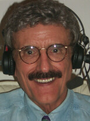
<br><b><font face="Arial,Helvetica"><font size=-1>Lee Pulos -- a clinical
psychologist, restauranteur and management trainer.&nbsp;</font></font></b>
<br><b><font face="Arial,Helvetica"><font size=-1>Skilled in the use of
self-hypnosis as a state conducive to apparent psychic intuition,&nbsp;</font></font></b>
<br><b><font face="Arial,Helvetica"><font size=-1>Pulos built his Spaghetti
Factory business up to a chain of twenty restaurants</font></font></b></center>

<p><font face="Arial,Helvetica">Professors Douglas Dean and John Mihalsky
at the Newark College of Engineering PSl Communications Project have spent
ten years testing the precognitive abilities of over 5,000 businessmen.
They had heard numerous stories of how fortunes were made by men whose
intuitive decisions seemed to defy all logical considerations. In one series
of studies they looked at company presidents who had doubled their company's
profits during the last five years. They found these individuals scored
much higher in the precognitive tests than other executives. In fact, the
ESP test seemed to be a much better indicator of executive success than
other personality measurements. A number of companies have shown an interest
in using this technique to screen applicants for management positions.</font>
<p><font face="Arial,Helvetica">One of the interesting outcomes of the
PSI Communications work with executives was the high percentage of subjects
(about 80%) who openly acknowledged a belief in ESP. When questioned further,
the businessmen admitted their belief was not based on either a familiarity
with the scientific literature or an acquaintance with some psychics. These
tough-minded individuals believed in ESP because they had seen it work
in their own lives!</font>
<p><font face="Arial,Helvetica">Another major endeavor in the business
community is that of financial investments. Large investment companies
typically spend millions of dollars in market research and investigation.
In spite of all this effort, education and statistical science, major investment
companies not infrequently fail to achieve results that equal the performance
of the overall market.</font>
<p><font face="Arial,Helvetica">In 1982, the <i>St. Louis Business Journal</i>
conducted a special event with nineteen prominent stockbrokers and one
psi practitioner, Mrs. Bevy Jaegers.</font>
<p><font face="Arial,Helvetica">Each participant was asked to select five
stocks whose value would increase over a six-month period. Mrs. Jaegers,
who has no professional training in corporate analysis, outperformed eighteen
of the nineteen experts. During the test period, the Dow Jones Industrial
Average fell eight percent. Jaeger's stocks were up an average of 17.2
percent. The only stockbroker who bettered her attained an average of 17.4
percent. Sixteen of the stockbrokers chose stocks that lost their value.</font>
<p><font face="Arial,Helvetica">Another psionic organization in the San
Francisco Bay Area was Delphi Associates. This group was formed by Russell
Targ and Keith Harary after leaving SRI International where they had been
conducting remote viewing experiments, under government sponsorship, for
several years.</font>
<center>
<p>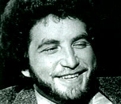
<br><b><font face="Arial,Helvetica"><font size=-1>Keith Harary</font></font></b>
<br><font face="Arial,Helvetica"><font size=-2>(courtesy <a href="http://www.thinkingallowed.com/" >Thinking
Allowed Productions</a>)</font></font>
<p>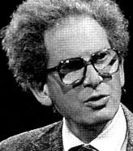
<br><b><font face="Arial,Helvetica"><font size=-1>Russell Targ</font></font></b>
<br><font face="Arial,Helvetica"><font size=-2>(courtesy <a href="http://www.thinkingallowed.com/" >Thinking
Allowed Productions</a>)</font></font></center>

<p><font face="Arial,Helvetica">In a unique pilot study, Harary was able
to predict the movement of silver futures accurately for nine consecutive
weeks. Actually, he did not predict the price changes directly, rather
he was asked to describe an object or scene that he was to view the following
week. The objects were randomly coded by the investigators to correlate
with movements in the price of silver. The success of this study, even
though subsequent tests failed to yield the same extraordinary results,
enabled Targ and Harary to financially sustain their continued business
and research activities for a period of time. The organization has since
disbanded -- although not before Targ and Harary wrote a best-selling book
describing their work, <i>The Mind Race</i>.</font>
<p><font face="Arial,Helvetica">The applied psi activities of Uri Geller
has been reported in business publications and in a biography which Geller
co-authored with Guy Lyon Playfair. Geller, of course, achieved notoriety
for his unusual work as a psychic entertaine. In retrospect, it's fair
to say that, for better or worse, he influenced the field of psychokinesis
research. The term "mini-Gellers" now refers to ostensibly talented macro-PK
subjects that have been reported in over a dozen countries -- generally
discovering their supposed talents after watching Uri Geller perform on
television. However, for well over a decade, Geller has discontinued his
work as a laboratory subject and has entered the world of psionics. News
of Geller's more recent activities have surfaced in a national business
publication, <i>Forbes Magazine</i>, in a profile article following up
on an earlier story which appeared in the <i>Wall Street Journal</i>. I
will quote some portions from that article:</font>
<blockquote><font face="Arial,Helvetica">Big businesses," he [Geller] says,
"are beginning to listen to people who think they can deliver something
with their sixth sense." Consider the possibilities? What if some enterprising
outsider were to hire a psychic to abscond with the secrets of IBM's new
1000K RAM chip? Or, if a Boone Pickens has the power to compel a Gulf or
Cities Service to bow to the terms of his latest merger offer? What if
he knows what the stock market or the gold market or the bond market will
do in the next week or next month or next year?</font>
<p><font face="Arial,Helvetica">It was Val Duncan, the late chairman of
Britain's Rio Tinto Zinc Corporation that made him [Geller] see the possibilities
that business could offer. Duncan tested Geller's ability to find minerals
on Majorca and later put him in touch with the chairman of South Africa's
Anglo Transvaal Mining Company. The Chairman spread out a map and said,
"Tell me what you feel." Geller said, "I feel something here." And years
later Geller said the company found coal on the spot. "That's when I learned
I could do this for very big companies and profit myself also. For seven
years I have been doing this and nobody knows anything about it."</font>
<p><font face="Arial,Helvetica">Several oil companies, for example, hired
him to do some exploration. Acting as a sort of airborne divining rod,
Geller targeted 11 prospects, four of which he says proved out. Geller
doesn't charge fees, he claims. He relies on people to pay him what his
service is worth. In this case a percentage royalty. "It's a little percentage,"
he says, "but in oil a little is a lot."</font>
<p><font face="Arial,Helvetica">Which companies he has worked for Geller
won't say. "They do not want their name to be linked to the psychic, to
the paranormal." His only really public venture to date is his success
in bringing together Japan's Aoki Corporagtion and the U.S. Tishman Reality
in a $500 million hotel, condominium shopping development near Disney World
in Florida. Both John Aoki and John Tishman were personal friends. But
Geller claims to be more than a mere go-between. "My role is that I predict
the success of the venture." That's where the power lies in being able
to predict future success.</font></blockquote>

<p><br><b><font face="Arial,Helvetica">Public Safety</font></b>
<p><font face="Arial,Helvetica">After a mine disaster in Wales, in which
144 people perished, researchers collected reports from individuals who
claimed to have had premonitions of the event. Seventy-six reports were
recieved. In twenty-four cases, the percipient had actually talked to another
person about the premonition before the catastrophe. Twenty-five of the
experiences were in dreams.</font>
<p><font face="Arial,Helvetica">A study conducted by W. E. Cox indicates
that precognition also operates on mass-awareness levels. Cox accumulated
statistics on the numbers of passengers aboard 28 railroad trains which
were involved in accidents. These figures were found to be significantly
less than the number of passengers on the same trains one week before or
a few days after the accident. People somehow avoided the accident-bound
trains. There were also fewer passengers in damaged and derailed coaches
than would have been expected according to the figures for non-accident
days. Cox hypothesized that many potential passengers were aware of the
oncoming tragedy, but not on a fully conscious level.,&nbsp;</font>
<p><font face="Arial,Helvetica">Several practitioners, such as Alan Vaughan,
have suggested the use of ESP for safety inspection of such complicated
systems as the space shuttle, nuclear reactors, or oil pipelines.</font>
<p><font face="Arial,Helvetica">About two months before the assassination
of Robert Kennedy in June 1968, Alan Vaughan, then in Germany studying
synchronicity at the Freiburg Institute for Border Areas of Psychology,
began to develop a strong premonition that Kennedy would be assassinated.</font>
<center>
<p>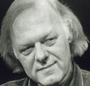
<br><b><font face="Arial,Helvetica"><font size=-1>Alan Vaughan</font></font></b>
<br><font face="Arial,Helvetica"><font size=-2>(courtesy <a href="http://www.thinkingallowed.com/" >Thinking
Allowed Productions</a>)</font></font></center>

<p><font face="Arial,Helvetica">The event, he felt, was part of a complex
archetypal pattern which he was tuned into, involving the killings of both
JFK and Martin Luther King. Many coincidences and dreams began to support
Vaughan's theory. On April 29 and again on May 28, Vaughan wrote letters
to parapsycholgists notifiying them of his premonition and hoping that
Kennedy could be warned. His letter was received by Stanley Krippner at
the Maimonides Hospital Medical Center on the morning of June 4. Subsequently,
Vaughan's apparent precognitive abilities have been extensively tested.,</font>
<p><font face="Arial,Helvetica">Ironically enough, at least three cases
are on record regarding the accidental deaths of parapsychologists who
did not heed the warnings of their psychic subjects. Perhaps the subjects
had not sufficiently demonstrated their reliability in the past.</font>
<br>&nbsp;
<p><b><font face="Arial,Helvetica">Education</font></b>
<p><font face="Arial,Helvetica">Modern American education is oriented toward
the cultivation of the mental abilities charted by Benjamin Bloom et al.
in their three taxonomies of educational goals: cognitive, affective and
psychomotor. Psi functioning has not been included within this taxonomy.
This "cultural vacuum" may have been responsible for the growth of many
cults and organizations claiming to train psi and other related abilities.
The mainstream educational community has yet to awaken to the challenge
of assessing the need and potential for parapsychological education within
the school system. One area of obvious potential application and some apparent
results is in special education for the blind., Some steps toward the evaluation
of popular programs for psi cultivation are found in my second book, <i>Psi
Development Systems</i>.</font>
<br>&nbsp;
<p><b><font face="Arial,Helvetica">Creativity in Art, Literature and Music</font></b>
<center>
<p>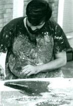
<br><b><font face="Arial,Helvetica"><font size=-1>Luiz Gasparetto in trance
ostensibly possessed&nbsp;</font></font></b>
<br><b><font face="Arial,Helvetica"><font size=-1>by the spirit of Vincent
Van Gogh</font></font></b></center>

<p><font face="Arial,Helvetica">Trance experience is sometimes accompanied
by artistic production that seems beyond the experience and talent of the
conscious mind. Well-known examples of this phenomena are the literary
productions of the Brazilian spiritist Chico Xavier, the artistic productions
of Luiz Gasparetto (another Brazilian spiritist) and the classical musical
creations of the English medium, Rosemary Brown. In each of these cases,
mediums claim that the artistic creations are produced with the aid of
discarnate entities.</font>
<br>&nbsp;
<p><b><font face="Arial,Helvetica">Agriculture and Pest Control&nbsp;</font></b>
<p><font face="Arial,Helvetica">The use of magical rituals as an adjunct
to agriculture certainly dates back to prehistoric times. It eventually
became formalized in the Eleusinean mystery religion of ancient Greece.
In contemporary society, some practitioners use "radionics" instruments
as devices for focusing concentration and eliminating pests and disease
from crops. Many anecdotal accounts, such as those of Arthur M. Young,
attest to the success of this method. Controlled experimental investigations
have not been published.</font>
<br>&nbsp;
<p><b><font face="Arial,Helvetica">Athletics and Sports&nbsp;</font></b>
<p><font face="Arial,Helvetica">Anecdotal accounts, collected by Michael
Murphy and Rhea White, suggest peak moments of psychic perception, psychokinesis,
and synchronistic flow are associated with dramatic levels of athletic
performance.</font>
<center>
<p>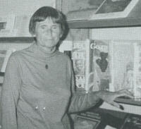
<br><b><font face="Arial,Helvetica"><font size=-1>Rhea White</font></font></b></center>

<p><font face="Arial,Helvetica">Murphy, founder of the Esalen Institute
in Big Sur, California, has developed a database suggesting that athletes
develop extraordinary control of the human body -- powers comparable to
that those reported of yogis, mystics and saints.</font>
<center>
<p>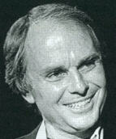
<br><b><font face="Arial,Helvetica"><font size=-1>Michael Murphy</font></font></b>
<br><font face="Arial,Helvetica"><font size=-2>(courtesy <a href="http://www.thinkingallowed.com/" >Thinking
Allowed Productions</a>)</font></font></center>

<p><br>
<br>
<br>
<p><b><font face="Arial,Helvetica">Finding Lost Objects</font></b>
<p><font face="Arial,Helvetica">Tribal shamanism, perhaps the world's second
oldest profession, cultivated practitioners who were noted for their ability
to find lost objects. Adrian Boshier reported that tests for this are a
normal part of shamanistic training in South Africa. An experimental model
for testing this ability in natural situations has been designed by Patric
Geisler, a psi researcher and anthropologist. Popular advertisements in
<i>Fate
</i>magazine
present many claims of this ability.</font>
<br>&nbsp;
<p><b><font face="Arial,Helvetica">Scientific Discovery</font></b>
<p><font face="Arial,Helvetica">At the beginning of the twentieth century
the theosophist clairvoyant C. W. Leadbeater published a book called <i>Occult
Chemistry</i> in which he attempted to use psi perception to determine
the structure of molecules. In so doing, he anticipated the discovery of
deuterium, an isotope of hydrogen. Later, similar attemppts were reported
by French researcher Z. W. Wolkowski who conducted successful tests with
a sensitive, Raymond Reant. In the realm of astronomy, remote viewing experiments
have reportedly provided unexpected data that was later confirmed by satellite
probe. These reports have been very controversial.</font>
<br>&nbsp;
<p><b><font face="Arial,Helvetica">Weather Prediction and Control</font></b>
<p><font face="Arial,Helvetica">The ability to control the weather is reputed
to occur among shamans of many tribal groups and has reportedly been observed
in the American Indian culture as well as the Tibetan. Several ostensible
instances with an American practitioner have also been documented by myself
and are included in the earlier discussions of UFOs and macro-pk. Followers
of the psychiatrist Wilhelm Reich claim to have developed control over
the weather through the use of mysterious "cloudbusters" that are said
to manipulate "orgone energy."</font>
<br>&nbsp;
<p><b><font face="Arial,Helvetica">Animal Training and Interspecies Communication</font></b>
<p><font face="Arial,Helvetica">Sir Arthur Grimble, who served as the British
resident Commissioner for the Gilbert and Ellis Islands in the South Pacific,
reports witnessi`g a scene in which a native shaman entered a dream state
in order to "call porpoises." After a period of time he awoke from his
sleep and announced to the tribe that the porpoises were coming. The village
of about 1000 individuals rushed down to the beach eagerly expecting a
rare feast, and Grimble documents that he observed an entire flotilla of
porpoises swim onto the beach, passively offering themselves to the natives:&nbsp;</font>
<blockquote><font face="Arial,Helvetica">They were moving toward us in
extended order with spaces of two or three yards between them, as far as
the eye could reach. So slowly they came they seemed to be hung in a trance.
It was as if their single wish was to get to the beach.</font></blockquote>
<font face="Arial,Helvetica">The years since the first publication of <i>The
Roots of Consciousness</i> have seen the birth and growth of an international
movement to foster and study new forms of communication between humans
and cetaceans. In 1976, I became a participant-observer of this movement.
An organization, called the New Frontiers Institute, operating in a San
Francisco suberb had developed some unusual methods for psychic work akin
to travelling clairvoyance occurring during a mutual hypnotic induction.
Members of the group included a chiropracter, a housewife from Argentina,
an astrophysicist, a psychiatrist and an accountant. I found them to be
amiable and was willing to engage in group hypnotic experiences with them.
Several such sessions ensued.</font>
<center>
<p>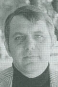
<br><b><font face="Arial,Helvetica"><font size=-1>Richard Gierak, founder
of the New Frontiers Institute</font></font></b></center>

<p><font face="Arial,Helvetica">During these experiences, after a lengthy
hypnotic induction, we engaged in a form of what might be called group
fantasy -- or if more than fantasy were involved, perhaps group astral
projection, or, if any of this could be objectively verified, group travelling
clairvoyance. Typically, we would "fly" to the top of the north tower of
the Golden Gate Bridge. After, checking to make sure we were all "there,"
we would "fly" off on further adventures-- each of us describing our experiences
verbally to the others.</font>
<p><font face="Arial,Helvetica">On one such occasion, we decided to visit
Marine World, a Bay Area wildlife amusement park, to see whether we could
communicate with a dolphin. As the conversation progressed, the following
points emerged:</font>
<blockquote><font face="Arial,Helvetica">1) We were with a female dolphin.</font>
<br><font face="Arial,Helvetica">2) She was sick and cantankerous.</font>
<br><font face="Arial,Helvetica">4) Her name was "Dee" or began with "D."</font>
<br><font face="Arial,Helvetica">5) She was in a separate tank without
a mate.</font>
<br><font face="Arial,Helvetica">6) She did not wish to cooperate with
the trainers.&nbsp;</font>
<br><font face="Arial,Helvetica">7) She wanted us to help her escape.</font>
<br><font face="Arial,Helvetica">8) She wanted to travel with us astrally.</font></blockquote>
<font face="Arial,Helvetica">The issue of helping a dolphin escape was
not entirely absurd -- as such an instance had recently been reported in
the news. We all felt a great deal of empathy for "Dee," but we were not
prepared to engage in illegal activities in her behalf. We offered her
another solution. If this ostensible communication were real, we would
visit "Dee" at Marine World. If we could somehow objectively demonstrate
some type of human-dolphin telepathic communication, the knowledge of this
might provoke other humans into rethinking our entire relationship with
dolphins in a way that would greatly benefit "Dee" and others of her species.
Meanwhile we would use whatever psychic means we had to help "Dee" and
to heal her.</font>
<p><font face="Arial,Helvetica">This particular session had a remarkable
quality in terms of both its vividness and the group coherence. Immediately
after awakening from the group hypnotic experience, we phoned Marine World
to see if they had a dolphin that resembled "Dee." We were, fortunately,
put through to one of the dolphin trainers who told us that there was a
female dolphin who matched our description. Her name was "Dondi." Intrigued
by our story, he invited us to Marine World for a private visit, to meet
Dondi and for some informal testing of our possible communication with
her.</font>
<p><font face="Arial,Helvetica">During our first session at Marine World,
the trainers had placed Dondi in a tank with five five other dolphins.
We were asked simply to see if we could identify which of these she was.
Five of the six of our group succeeded in this -- although there was some
discussion among us and these could not be thought of as independent observations
(which would be of relevance for statistical analysis).</font>
<p><font face="Arial,Helvetica">The dolphin trainers also told us that,
from their own experiences with these very intelligent animals, they had
little doubt of the possibility of telepathic communication between cetaceans
and humans. In fact, a recent issue of the dolphin trainer's professional
newsletter had just featured an article about one of the most honored of
their profession, Frank Robson. A New Zealander, Robson was knighted by
Queen Elizabeth for the remarkable work described in his book <i>Thinking
Dolphins -- Talking Whales</i>. He had achieved heroic status by saving
a pod of whales that had become stranded on a sandbar in the South Pacific.
Robson described this success, and many other experiences as resulting
from a type of telepathy. Thus the dolphin trainers at Marine World were
most willing to work with the New Frontier Institute group to explore further
the possibility of human-dolphin telepathy.</font>
<p><font face="Arial,Helvetica">Over a period of months, members of the
group frequented the dolphin tanks at Marine World, paying particular attention
to Dondi. Her condition improved markedly -- to the point where instead
of being sick, contankerous and uncooperative, she had become the star
performer in Marine World's dolphin show.</font>
<p><font face="Arial,Helvetica">In May of 1977, a pilot attempt was made
to assess the effectiveness of the New Frontiers Institute work with dolphins.
The entire experiment was videotaped. In addition, detailed audiotaped
records of Dondi's behavior were made by several independent observers
(including myself, on this occasion) and were later transcribed. The final
results were suggestive of the possibility that Dondi was responsive, over
50% of the time, to telepathic instructions.</font>
<p><font face="Arial,Helvetica">Another interspecies explorer, and international
organizer of the movement, is Wade Doak of Whangerei, New Zealand, author
of ten books on natural history and wildlife, including <i>Dolphin Dolphin</i>
and <i>Encounters With Whales and Dolphins</i>.</font>
<center>
<p>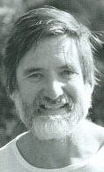
<br><b><font face="Arial,Helvetica"><font size=-1>Wade Doak</font></font></b></center>

<p><font face="Arial,Helvetica">Doak maintains that his exploration of
interspecies communication began with a simple incident that took place
on his catamaran in the waters off of New Zealand. An American visitor
sitting on the deck suddenly and unexpectedly experienced an altered state
of consciousness which he described as being like "a pinball machine in
my head." Moments later, a dolphin jumped out of the water within a few
feet of the American and looked at him right in the eye.</font>
<p><font face="Arial,Helvetica">That evening, the American reported a strange
dream. In the dream, Wade Doak was in the water surrounded by dolphins
who were swimming about him in a figure-eight pattern. The dolphins were
making a strange noise that sounded like "tepuhi."</font>
<p><font face="Arial,Helvetica">Doak was a naturalist and filmmaker by
training who had extensively studied communication patterns among the species
inhabiting South Pacific coral reefs. In his explorations, he had encountered
many exotic forms of communication among the various species -- including
the native, micronesian tribes. He suspected that his friend's dream might
represent a form of "biological communication" between humans and dolphins.</font>
<p><font face="Arial,Helvetica">In order to explore this hypothesis further,
he visited a shaman of the New Zealand Maori people. The Maoris call themselves
the "people of the dolphin" and legend has it that their tribes was originally
guided to the New Zealand islands in past ages by the dolphins themselves.
The shaman believed that this dream was not a mere fantasy. He pointed
out that "tepuhi" is the Maori word for the sound that dolphins make when
they blow water from their blowholes.</font>
<p><font face="Arial,Helvetica">Pressing matters further, Doak launched
an expedition to contact dolphins in the open waters off New Zealand. He
equipped his catamaran with film equipment. However, no dolphins were sighted
for several weeks. Finally, on one occasion, some dolphins were sighted
in the distance.</font>
<p><font face="Arial,Helvetica">Doak jumped into the water and, while underwater,
made the sound "tepuhi." At that moment, his film crew was fortunate enough
to capture an extraordinary event. Circling the boat, dozens of dolphins
simultaneously jumped into the air. Then they swam around Doak in a figure
eight pattern -- a confirmation of the dream communication. Doak has since
spent the intervening years continuing his efforts to communicate with
and even live with dolphins in the open waters. He is also the founder
of Project Interlock, an informal, international network of individuals
who are engaging in similar experiences.</font>
<br>&nbsp;
<p><b><font face="Arial,Helvetica">Intuitive Consensus</font></b>
<p><font face="Arial,Helvetica">The Center for Applied Intuition was founded
by William Kautz, who has also been a senior research scientist in the
area of mathematics and computer science at SRI International. He developed
a method called intuitive consensus:</font>
<center>
<p>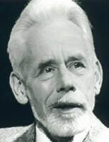
<br><b><font face="Arial,Helvetica"><font size=-1>William Kautz</font></font></b>
<br><font face="Arial,Helvetica"><font size=-2>(courtesy <a href="http://www.thinkingallowed.com/" >Thinking
Allowed Productions</a>)</font></font></center>

<blockquote><font face="Arial,Helvetica">Essentially, the method of intuitive
consensus consists of a careful preparation of the questions to be answered
to eliminate ambiguity and vagueness; posing the questions independently
to a team of four or more 'intuitives,' followed in each case by a dialogue
until clear and detailed answers are obtained; then analysis and comparison
with one another and existing knowledge to form a consensus of intuitively
derived information. The team approach permits the occasional errors and
discrepancies in the information provided by individual team members to
be almost completely eliminated. The questioning cycle may be repeated
one or more times in order to resolve ambiguities or contradictions, usually
traceable to erroneous preconceptions or unintended vagueness in the questions
and to otherwise reduce the noise level in the intuitive communication
channel. The final consensus takes the form of specific hypotheses amenable
to test by ordinary scientific means. In some cases it provides new perspectives
and new ideas about the problem under study.</font></blockquote>
<font face="Arial,Helvetica">Actually, the method employed by Kautz is
very similar to the "Delphi method" which is used in future forecasting.
In this method, various experts are questioned about potential future phenomena
which fall under their expertise. The primary difference is that Kautz
does not employ intellectual or academic experts; he employs people whose
knowledge is derived from intuitive sources, which may be taken, in this
case, as a possible euphemism for psi sources.</font>
<p><font face="Arial,Helvetica">Kautz has been applying this method, under
contract, for va"Ious business and professional organizations. He recently
completed a study for a Japanese research institute on the "Future of Japan."
He has also employed the method to develop scientific hypotheses related
to such unsolved problems as the cause of earthquakes, and the cause of
crib death in infants, as well as technical problems in genetic engineering.&nbsp;</font>
<p><font face="Arial,Helvetica">While the results he has obtained in these
studies are not inconsistent with the possibility of successful ESP functioning,
I am personally not aware of any individual instances of Kautz' work which
could be put forward as examples of success in this area that could be
attributed to psychic functioning. Kautz' approach has been detailed in
two books, co-authored with Melanie Brannon, Channeling and Intuiting the
Future.</font>
<br>&nbsp;
<p><b><font face="Arial,Helvetica">Some Concluding Thoughts About Folklore</font></b>
<p><font face="Arial,Helvetica">There is an ironic boundary separating
the worlds of science and folklore. While folklore, as such, carries little
or no scientific weight; science, without folklore, has little or no real
meaning. This is most evident in looking at the writings of certain critics
of psi research. Such critics will, from time to time, grudgingly acknowledge
that some studies contain statistically anomalous effects. However, they
point out these effects are simply meaningless statistical correlations
pointing to no recognizable phenomena or principles.</font>
<p><font face="Arial,Helvetica">They may be correct, but only in a rigidly
limited sense. I believe they are wrong to eliminate all history and folklore
from scientific consideration. For within the real-life, human context
which history and folklore provide, the seemingly meaningless statistical
correlations of psi research take on a kind of life and color.</font>
<p><font face="Arial,Helvetica">In Section II, I have reported some personal
experiences which seemed extraordinary to me: an apparent clairvoyant dream
experience which led to my career in the media, observations of Ted Owens
who attempted to demonstrate that he was half-alien, work with the New
Frontiers Institute in ostensible telepathic communication between humans
and dolphins, observations of Kathlyn Rhea who located a missing body for
the Calavaras County Sheriff. I have been personally struck by these experiences.
Whether I interpret them in a skeptical manner or as examples of psychic
functioning, is a personal matter. It is not possible to make a rigorous
scientific case either way, because there were too many uncontrolled variables
in every case.</font>
<p><font face="Arial,Helvetica">In Section III, after looking at how little
psychology has to say directly about consciousness and how much it has
to say about human error and folly, we will examine the evidence from psi
research. The strongest evidence (which some knowledable scientists still
reject) comes from experiments which bear the least relation to the world
of everyday activity. If you choose to accept the data from these studies,
they may make more sense to you in the light of material presented in Sections
I and II -- and vice-versa.</font>
<br>&nbsp;
<p><br>
<center>
<p><b><font face="Arial,Helvetica">References</font></b></center>

<p><font face="Arial,Helvetica">. Loyd M. Auerbach, "Psi-fi: Psi in Science
Fiction." <i>Applied Psi</i>, 3-4, Spring 1984.</font>
<p><font face="Arial,Helvetica">. Louisa E. Rhine, <i>PSI</i>. New York:
Harper &amp; Row, 1975.</font>
<p><font face="Arial,Helvetica">. Ronald Rose, <i>Primitive Psychic Power</i>.
New York: New American Library, 1956.</font>
<p><font face="Arial,Helvetica">. Joan Halifax-Grof, "Hex Death," in Alan
Angoff &amp; D. Barth (eds.), <i>Parapsychology and Anthropology: Proceedings
of an International Conference</i>. New York: Parapsychology Foundation,
1974.</font>
<p><font face="Arial,Helvetica">. Leonid I. Vasiliev, <i>Experiments in
Distant Influence</i>. New York: E. P. Dutton, 1976.</font>
<p><font face="Arial,Helvetica">. Sun Tzu, <i>The Art of War</i>, trans.
by S. B. Griffith. New York: Oxford University Press, 1963.</font>
<p><font face="Arial,Helvetica">. Zedenek Rejdak, "Parapsychology -- War
Menace or Total Peace Weapon?" in S. Ostrander &amp; L. Schroeder (eds.),
<i>The
ESP Papers: Scientists Speak Out from Behind the Iron Curtain</i>. New
York: Bantam, 1976.</font>
<p><font face="Arial,Helvetica">. J. H. Brennan, <i>The Occult Reich</i>.
New York: New American Library, 1974.</font>
<p><font face="Arial,Helvetica">. C. L. Linedecker, <i>The Psychic Spy</i>.
New York: Doubleday, 1976.</font>
<p><font face="Arial,Helvetica">. Leonid L. Vasiliev, <i>Experiments in
Distant Influence</i>. New York: E. P. Dutton, 1976.</font>
<p><font face="Arial,Helvetica">. Michael Rossman, <i>New Age Blues</i>.
New York: E. P. Dutton, 1979.</font>
<p><font face="Arial,Helvetica">. E. Read, "In Vietnam Life Can Depend
On a Dowsing Rod," <i>Fate</i>, 21(4), April 1968, 52-59.</font>
<p><font face="Arial,Helvetica">. SRI report</font>
<p><font face="Arial,Helvetica">. SRI report</font>
<p><font face="Arial,Helvetica">. A letter from Dr. Ray Hyman reporting
his salient observations of Uri Geller during those meetings refered to
the penetrating "blue eyes" of Uri Geller. Geller's eyes are brown.</font>
<p><font face="Arial,Helvetica">. <i>Paraphysics Research and Development
-- Warsaw Pact</i>. Defense Intelligence Agency, Washington, DC, March
30, 1978.</font>
<p><font face="Arial,Helvetica">. Charles T. Tart, "A Survey of Negative
Uses, Government Interest and Funding of Psi," <i>Psi News</i>, 1(2), 1978,
p. 3.</font>
<p><font face="Arial,Helvetica">. Barbara Honegger, who received an M.S.
degree in parapsychology at John F. Kennedy University, worked in the White
House as an assistant to Martin Anderson, Ronald Reagan's Domestic Policy
Advisor. She co-authored, with me, a paper titled, "National Security Implications
of Psi," for the <i>Applied Psi Newsletter</i>, 1(5), Nov-Dec 1982, which
is the basis for much that is reported here of government interest in psi.
She has also recently published a book, October Surprise (New York: xxxxx,
1989), detailing behind the scenes activities relating to Iranian arms
sales during the Reagan administration.</font>
<p><font face="Arial,Helvetica">. Robert C. Beck, "Extreme Low Frequency
Magnetic Fields Entrainment: A Psychotronic Warfare Possibility?" <i>Association
for Humanistic Psychology Newsletter</i>, April 1978.</font>
<p><font face="Arial,Helvetica">. Lt. Col. John B. Anderson, "The New Mental
Battlefield," <i>Military Review</i>, December 1980, 47-54.</font>
<p><font face="Arial,Helvetica">. Thomas E. Bearden, <i>Excalibur Briefing</i>.
San Francisco: Walnut Hill, 1980.</font>
<p><font face="Arial,Helvetica">. Thomas E. Bearden, "Soviet Psychotronic
Weapons: A Condensed Background," <i>Specula</i>, March-June 1978.</font>
<p><font face="Arial,Helvetica">. Candice Borland &amp; G. Landrith, <i>Improved
Quality of City Life: Decreased Crime Rate.</i> <i>MERU Report 7502</i>.
Weggis, Switzerland: Department of Sociology, Center for the Study of Higher
States of Consciousness, Maharishi European Research University, 1975.</font>
<p><font face="Arial,Helvetica">. M.C. Dillbeck, T.W. Bauer, &amp; S.I.
Seferovich, <i>The Transcendental Meditation Program as a Predictor of
Crime Rate Changes in the Kansas City Metropolitan Area</i>. Unpublished
paper (1978) Available from the International Center for Scientific Research,
Maharishi International University, Fairfield, Iowa 52556.</font>
<p><font face="Arial,Helvetica">. S. Giles, "Analysis of Crime Trend in
56 Major U.S. Cities," <i>Scientific Research on the Transcendental Meditation
Program: Collected Papers, Vol II</i>. Rheinweiler, West Germany, nd.</font>
<p><font face="Arial,Helvetica">. G. Hatchard, Influence of Transcendental
Meditation Program on Crime Rate in Suburban Cleveland, Unpublished paper
(1978). Available from the International Center for Scientific Research,
Maharishi International University, Fairfield, Iowa 52556.</font>
<p><font face="Arial,Helvetica">. G. Landrith, The Maharishi Effect and
Invincibility: Crime, Automobile Accidents and Fires. Unpublished paper
(1978). Available from the International Center for Scientific Research,
Maharishi International University, Fairfield, Iowa 52556.</font>
<p><font face="Arial,Helvetica">. Franklin D. Trumpy, "An Investigation
of the Reported Effect of Transcendental Meditation on the Weather," <i>Skeptical
Inquirer</i>, VIII(2), Winter 1983-84, 143-148.</font>
<p><font face="Arial,Helvetica">. Joseph Banks Rhine, "Some Exploratory
Tests in Dowsing," <i>JournaI of Parapsychology</i>, 14(4), December 1950,
278-286.</font>
<p><font face="Arial,Helvetica">. Kenneth Roberts, <i>Henry Gross and His
Divining Rod</i>. New York: Doubleday, 1951.</font>
<p><font face="Arial,Helvetica">. Kenneth Roberts, <i>The Seventh Sense</i>.
New York: Doubleday, 1953.</font>
<p><font face="Arial,Helvetica">. Kenneth Roberts, <i>Water Unlimited</i>.
New York: Doubleday, 1957.</font>
<p><font face="Arial,Helvetica">. Berthold E. Schwarz, <i>A Psychiatrist
Looks at ESP</i>. New York: New American Library, 1965. Originally published
as Psycho-Dynamics, the book contains studies of three different psychics.</font>
<p><font face="Arial,Helvetica">. A. G. Bakirov, "The Geological Possibilities
of the Biophysical Method," trans. by C. Muromcew &amp; C. Bird, <i>The
American Dowser</i>, August 1974, 110-112.</font>
<p><font face="Arial,Helvetica">. A useful skeptical account of dowsing
is Evon Z. Vogt and Ray Hyman, <i>Water Witching U.S.A.</i> Chicago: University
of Chicago Press, 1959.</font>
<p><font face="Arial,Helvetica">. Jonsson, incidentally, is the same psychic
who participated with astronaut Edgar Mitchell in a less than successful
ESP experiment from outer-space. See Edgar D. Mitchell, "An ESP Test from
Apollo 14," <i>Journal of Parapsychology</i>, 35(2), 1971.</font>
<p><font face="Arial,Helvetica">. "News Ambit," <i>Psychic Magazine</i>,
December 1974.</font>
<p><font face="Arial,Helvetica">. Ostrander &amp; Schroeder, <i>Psychic
Discoveries Behind the Iron Curtain</i>.</font>
<p><font face="Arial,Helvetica">. In May of 1975, Lozanov spoke at several
conferences of American educators who are interested in utilizing his techniques.&nbsp;</font>
<p><font face="Arial,Helvetica">. Milan Ryzl, <i>ESP in the Modern World.</i>
San Jose: Milan Ryzl, 1972. Available from the author, P.O. Box 9459, Westgate
Station, San Jose, Ca. 95117.&nbsp;</font>
<p><font face="Arial,Helvetica">. Frederick Bligh Bond &amp; T. S. Lea.
<i>The
Gate of Remembrance: The Story of the Psychological Experiment Which Resulted
in the Discovery of Edgar Chapel at Glastonbury.</i> 2nd &amp; 4th editions
rev. Oxford: Basil Blackwell, 1918, 1921.</font>
<p><font face="Arial,Helvetica">. J. N. Emerson, "Intuitive Archeology:
A Psychic Approach," <i>New Horizons</i>, 1(3), January 1974.</font>
<p><font face="Arial,Helvetica">. J. N. Emerson, "Intuitive Archeology:
The Argillite Carving," Department of Anthropology, University of Toronto,
March 1974.</font>
<p><font face="Arial,Helvetica">. J. N. Emerson, "Intuitive Archeology:
A Developing Approach," Department of Anthropology, University of Toronto,
November 1974.</font>
<p><font face="Arial,Helvetica">. Chris Bird &amp; Jeffrey Mishlove, "Soviet
Parapsychology," Mindspace radio broadcast, May 1975.</font>
<p><font face="Arial,Helvetica">. Stephen A. Schwartz, <i>The Secret Vaults
of Time</i>. New York: Grosset &amp; Dunlap, 1978.</font>
<p><font face="Arial,Helvetica">. Stephen A. Schwartz &amp; H. E. Edgerton,
<i>A
Preliminary Survey of the Eastern Harbour, Alexandria, Egypt, Combining
both Technical and Extended Sensing Remote Sensor Exploration.</i> Los
Angeles: The Mobius Group, 1980.</font>
<p><font face="Arial,Helvetica">. Stephan A. Schwartz &amp; Rand de Mattei,
"The Discovery of an American Brig: Fieldwork Involving Applied Archaeological
Remote Viewing," in Linda A. Henkel &amp; Rick E. Berger (eds.), <i>Research
in Parapsychology 1988.</i> Metuchen, NJ: Scarecrow Press, 1989.</font>
<p><font face="Arial,Helvetica">. A major critic of this report has been
Keith Harary, a psi researcher who has served as a Mobius respondent.</font>
<p><font face="Arial,Helvetica">. Paul Tabori, <i>Crime and the Occult</i>.
New York: Taplinger, 1974.</font>
<p><font face="Arial,Helvetica">. Ibid.</font>
<p><font face="Arial,Helvetica">. Ibid.</font>
<p><font face="Arial,Helvetica">. M. B. Dykshorn &amp; Russell H. Felton,
<i>My
Passport Says Clairvoyant</i>. New York: Hawthorne, 1974.</font>
<p><font face="Arial,Helvetica">. "Interview: Irene Hughes," <i>Psychic
Magazine</i>, December 1971.</font>
<p><font face="Arial,Helvetica">. Tabori, op. cit.</font>
<p><font face="Arial,Helvetica">. Ibid.</font>
<p><font face="Arial,Helvetica">. Piet Hein Hoebens, "Gerard Croiset: Investigation
of the Mozart of 'Psychic Sleuths' -- Part I," <i>Skeptical Inquirer</i>,
VI(1), Fall 1981, 17-28</font>
<p><font face="Arial,Helvetica">. Piet Hein Hoebens, "Croiset and Professor
Tenheaff: Discrepancies in Claims of Clairvoyance," <i>Skeptical Inquirer</i>,
VI(2), Winter 1981-2, 32-40.</font>
<p><font face="Arial,Helvetica">. Kathlyn Rhea, <i>Mind Sense</i>. Berkeley,
CA: Celestial Arts, 1988.</font>
<p><font face="Arial,Helvetica">. Kathlyn Rhea, <i>The Psychic is You</i>
(2nd edition). Berkeley, CA: Celestial Arts, 1988.</font>
<p><font face="Arial,Helvetica">. Pat Michaels, "Pat Michaels, Clairvoyant
Newsman," <i>Fate</i>, August 1966, 442-53.</font>
<p><font face="Arial,Helvetica">. William H. Kautz, "Rosemary Case of Alleged
Egyptian Xenoglossy," <i>Theta</i>, 10(2), 1982, 26-30.</font>
<p><font face="Arial,Helvetica">. Jeffrey Goodman, <i>Psychic Archeology</i>.
New York: G. P. Putnam, 1977.</font>
<p><font face="Arial,Helvetica">. Douglas Dean, John Mihalsky, Shiela Ostrander
&amp; Lynn Schroeder, <i>Executive ESP</i>. Englewood Cliffs, New Jersey:
Prentice-Hall, 1974.</font>
<p><font face="Arial,Helvetica">. Eric Mishara, "Psychic Stock Market Analyst,"
<i>Omni</i>,
February 1983.</font>
<p><font face="Arial,Helvetica">. Uri Geller &amp; Guy Lyon Playfair, <i>The
Geller Effect</i>. New York: Henry Holt, 1986.</font>
<p><font face="Arial,Helvetica">. J. Cook, "Closing the Psychic Gap," <i>Forbes</i>,
1984, 133, 12, 90-95.</font>
<p><font face="Arial,Helvetica">. Ibid.</font>
<p><font face="Arial,Helvetica">. J. C. Barker, "Premonitions of the Aberfan
Disaster," <i>Journal of the Society for Psychical Research</i>, 44, 1967,
169-180.</font>
<p><font face="Arial,Helvetica">. E. W. CBx, "Precognition: An Analysis,
I," <i>Journal of the American Society for Psychical Research</i>, 50,
1956, 47-58.</font>
<p><font face="Arial,Helvetica">. E. W. Cox, "Precognition: An Analysis,
II," <i>Journal of the American Society for Psychical Research</i>, 50,
1956, 97-107.</font>
<p><font face="Arial,Helvetica">. Alan Vaughan, "Applying Precognition
to Space Systems," <i>Applied Psi Newsletter</i>, 1(2), May/June 1982,
1-6.</font>
<p><font face="Arial,Helvetica">. Alan Vaughan, <i>Patterns of Prophecy</i>.
New York: Hawthorne, 1973, 37-55. Vaughan is also a researcher and theorist.
His book provides a detailed discussion of the archetypal patterns of time.</font>
<p><font face="Arial,Helvetica">. For an interesting research study involving
Vaughan and his students, see Gertrude R. Schmeidler &amp; J. Goldberg,
"Evidence for Selective Telepathy in Group Psychometry," in W. G. Roll,
R. L. Morris &amp; J. D. Morris (eds.), <i>Research in Parapsychology 1973</i>.
Metuchen, NJ: Scarecrow Press, 1974.</font>
<p><font face="Arial,Helvetica">. For a skeptical account of Alan Vaughan's
abilities, see James Randi, "'Superpsychic' Vaughan: Claims Versus the
Record," <i>Skeptical Inquirer</i>, V(4), Summer 1981, 19-21.</font>
<p><font face="Arial,Helvetica">. Ibid., pp. 66-69, 101-102.</font>
<p><font face="Arial,Helvetica">. Carol Liaros, "Psi Faculties in the Blind,"
<i>Parapsychology
Review</i>, 5(6), November-December 1974, 25-26.</font>
<p><font face="Arial,Helvetica">. Yvonne Duplessis, <i>The Paranormal Perception
of Color</i>. New York: Parapsychology Foundation, 1975.</font>
<p><font face="Arial,Helvetica">. Jeffrey Mishlove, <i>Psi Development
Systems</i>. New York: Ballantine, 1988.</font>
<p><font face="Arial,Helvetica">. W. V. Rauscher, "Beethoven Lives Through
Rosemary Brown," In Marton Ebon (Ed.), <i>The Psychic Scene</i>. New York:
New American Library, 1974, pp. 140-150.</font>
<p><font face="Arial,Helvetica">. E. W. Russell, "Radionics -- Science
of the Future," in John White &amp; Stanley Krippner (eds.), <i>Future
Science</i>. New York: Anchor Books, 1977.</font>
<p><font face="Arial,Helvetica">. Michael Murphy &amp; Rhea A. White, <i>The
Psychic Side of Sports.</i> Reading, MA: Addison-Wesley, 1979.</font>
<p><font face="Arial,Helvetica">. Michael Murphy, Transforming the Human
Body (#S320). Videotape available from Thinking Allowed Productions, 2560
9th Street, #123, Berkeley, CA 94710.</font>
<p><font face="Arial,Helvetica">. Patric V. Geisler, "Parapsychological
Anthropology: Multi-Method Approaches to the Study of Psi in the Field
Setting," in W. G. Roll, J. Beloff, &amp; R. A. White (eds.), <i>Research
in Parapsychology 1982</i>. Metuchen, NJ: Scarecrow Press, 1983, pp. 241-244.</font>
<p><font face="Arial,Helvetica">. Annie Besant &amp; C. W. Leadbeater,
<i>Occult
Chemistry</i>. London: Theosophical Publishing House, 1919.</font>
<p><font face="Arial,Helvetica">. Z. W. Wolkowski, "A Case of Apparent
Direct Observation of Matter at the Molecular and Sub-Atomic Level," <i>Proceedings
of the Second International Congress on Psychotronic Research,</i> 1975,
Monte Carlo, pp. 288-290.</font>
<p><font face="Arial,Helvetica">. Janet Mitchell, "A Psychic Probe of the
Planet Mercury," <i>Psychic</i>, 6(3), May/June 1975, 16-21.</font>
<p><font face="Arial,Helvetica">. Jeffrey Mishlove, <i>Preliminary Investigation
of Events which Suggest the Applied Psi Abilities of Mr. Ted Owens</i>.
San Francisco: Washington Research Center, 1977, 1978.</font>
<p><font face="Arial,Helvetica">. T. J. Constable, "Orgone Energy Weather
Engineering Through the Cloudbuster," in John White &amp; Stanley Krippner
(eds.), <i>Future Science</i>. New York: Anchor Press, 1977.</font>
<p><font face="Arial,Helvetica">. Sir Arthur Grimble, <i>We Chose the Islands</i>.
New York: William Morrow, 1952.</font>
<p><font face="Arial,Helvetica">. Dr. Charles Tart (who at that time served
on my Ph.D. advisory committee in Berkeley) described a similar state in
an article titled, "Mutual Hypnotic Induction," published in his classic
anthology, <i>Altered States of Consciousness</i>, New York: Doubleday,
1971.</font>
<p><font face="Arial,Helvetica">. Wade Doak, <i>Dolphin Dolphin</i>. New
York: Sheridan House, 1988. While this most interesting book, and others
by Doak, may be hard to find in bookstores, they can be ordered directly
from the publisher at 146 Palisades, Dobbs Ferry, New York.</font>
<p><font face="Arial,Helvetica">. Wade Doak, <i>Encounters with Whales
&amp; Dolphins</i>. Auckland: Hodder &amp; Stoughton, 1988.</font>
<p><font face="Arial,Helvetica">. William H. Kautz, <i>Intuitive Consensus:
A Novel Approach to the Solution of Difficult Scientific and Technical
Problems</i>. Brochure published by the Center for Applied Intuition.</font>
<p><font face="Arial,Helvetica">. Published in San Francisco by Harper
&amp; Row in 1987 &amp; 1989 respectively.</font>
<p><font face="Arial,Helvetica">. E. G. Boring, "The Present Status of
Parapsychology," <i>American Scientist</i>, 43, 1955, 108-116.</font>
<p><font face="Arial,Helvetica">. P. W. Bridgeman, "Probability, Logic
and ESP," <i>Science</i>, 123, 1956, 15-17.</font></td>
</tr>
</table></center>

<center><b><font face="Arial,Helvetica"><font size=-1> 
 </font></font></b>
<br><b><font face="Arial,Helvetica"><font size=-1> 
 </font></font></b><font face="Arial,Helvetica"><a href="../index.html" ></a></font>
<p><b><font face="Arial,Helvetica"><font size=-1><a href="../index.htm" >Return
to <i>Roots of Consciousness</i> Contents</a></font></font></b></center>

</body>
</html>
